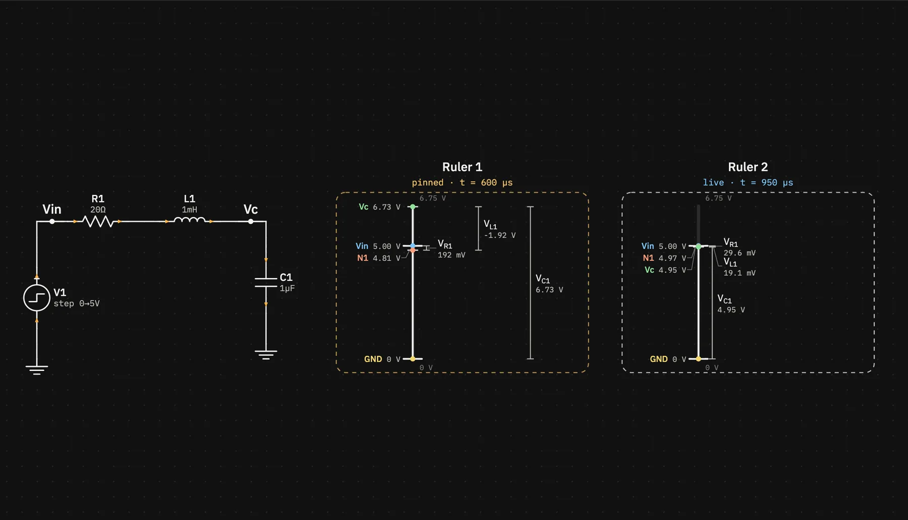
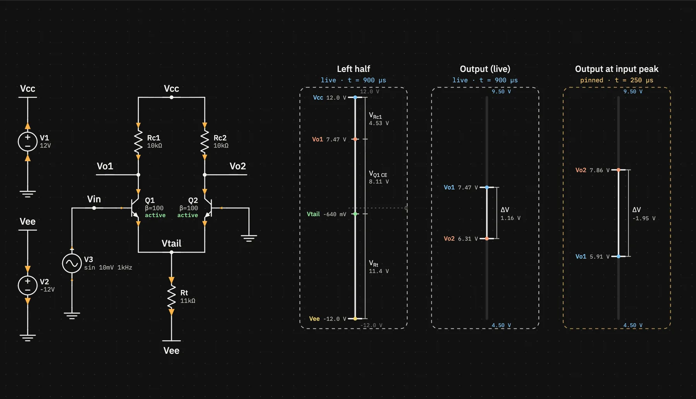
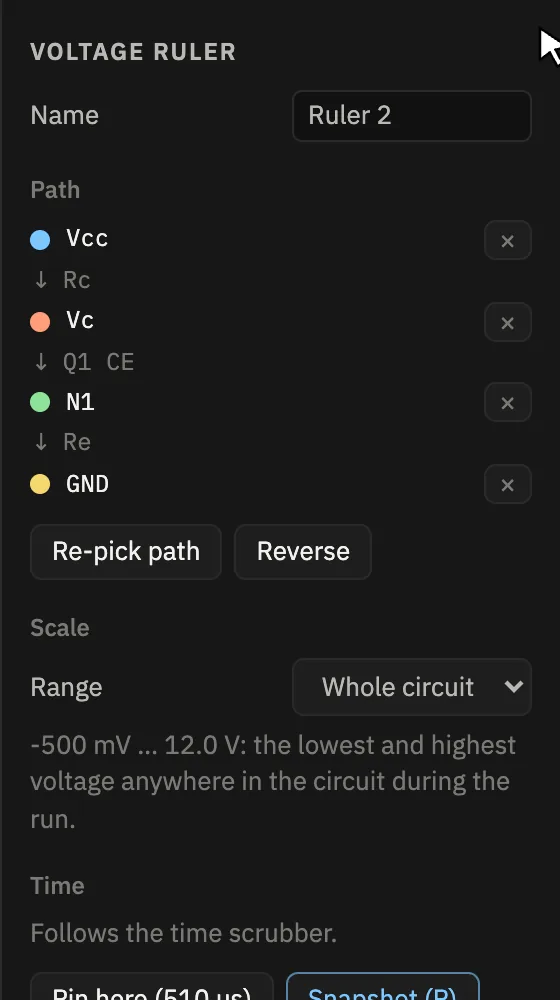

Features
Voltage rulers
A ruler is a vertical voltage scale drawn beside the schematic. It shows where a chosen path of nodes sits and how much voltage each step of the path takes, at one moment of the run.
Reading a ruler

- Title and tag. The ruler's name, then live · t = … or pinned · t = …, the moment it shows.
- Spine. Runs through the path's nodes, with I-beam caps on the first and last.
- Ticks. One per node, at that node's voltage, with its name and value. Each node keeps its colour on the ruler, in the plot and on the selected ruler's wires.
- Step brackets. One for each pair of neighbouring nodes in the path, labelled with the voltage across that step (see below).
- Scale. The top and bottom of the scale are printed at the ends, with a dotted line at 0 V when it's in range.
Making a ruler
- Press U or pick the ruler tool (the I-beam in the toolbar).
- Click the nodes in order, on a wire or a pin of each. The hint bar shows the path so far, like
Vdd → N1. A node can only appear once. - Finish with Enter, a double-click on the last node, a second click on it, or a right-click. ⌫ removes the last node and Esc cancels.
The new ruler is placed to the right of the others and selected, so the plot switches to its nodes. A path needs at least two nodes, and they don't have to be connected through parts. Any two nodes give you the voltage between them.
Step labels, signs and lanes
- A step across a single part is labelled with that part: VR1, VC1, VL1.
- For a transistor or op-amp, the label names the pin pair: VQ1 CE, VQ1 BE, VM1 DS, VM1 GS. For PNP and PMOS the order flips (EC, SD) so the value is positive in normal operation.
- Several parts in parallel are joined with ‖, for example VM1 DS ‖ CL.
- If no single part connects the two nodes, the step reads ΔV.
- Values are signed in path order: the first node's voltage minus the next one's. A reversed voltage, like an inductor's during ringing, comes out negative and is drawn in an outer lane so it doesn't overlap the others.
- A bracket too short for its label gets a leader line out to the label.

Scale
By default a ruler uses the whole circuit's range over the run: from the lowest to the highest voltage at any node at any time, with GND included. All rulers then share one scale, so a path in the middle of the circuit shows at its true height and you can compare rulers by eye.
For small differences, select the ruler and set Range to Custom in the inspector. You can then:
- type a Maximum and Minimum,
- click Fit to path to zoom onto the range this path covers over the run, plus a small margin,
- click Reset to circuit to go back to the full range while staying on Custom.
Nodes outside a custom range sit at the edge of the scale, marked ▲ or ▼.

Live and pinned
A live ruler shows the time under the scrubber. A pinned ruler shows a fixed moment, and a marker with its name shows that moment on the plot. With a ruler selected, the inspector's Time section offers:
- Pin here, which pins this ruler at the current time,
- Snapshot (P), which adds a pinned copy at the current time and leaves this one live,
- on a pinned ruler, a Pinned at field you can type into, Move pin to … and Follow scrubber.
A pinned ruler holds a time, not a copy of the values. If you change the circuit, it shows the new run at that moment.
Editing a ruler

- Name: rulers are named Ruler 1, Ruler 2, …, and you can rename them.
- Path: lists the nodes with the part between each pair. × removes a node, Reverse flips the order and the signs, and Re-pick path lets you click a new sequence of nodes for the same ruler.
- Move a ruler by dragging it, and change its height by dragging the small handle under its bottom-right corner.
- Ruler nodes are grid points, so moving parts carries the path along with their pins. A node whose point is no longer on a wire or pin shows as “detached”, and the ruler reports the problem until you fix or remove that node.